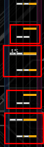
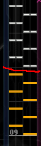
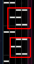
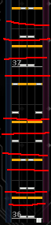
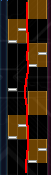
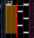

以鬼天EXH為例:
區塊認識: 


橫認識 
縱認識 

以上是如何理解一張圖，當然有人遇到啥都能用一種方法去解讀，不過通常混用在視譜上會比較輕鬆，
整首歌從頭到尾都是緊繃狀態容易造成各種疑難雜症手抖眼睛疼。
SDVX上讀圖目標:能夠把白/黃短鍵都當成白的。
然後試著用不同方法拆一張圖。
當然遇到某些神奇的配置，像是黑皇EXH，你會想把白黃拆開，可是手卻不協調，必須要大量練習。
但如果看免費影片，讓自己把他理解成橫的，有效減少手僻。畢竟，那邊的黃短不是定拍。
或是大宇宙，背起來用4個鍵一個區，一段四個區打的人有，
也有調快速度用反應玩的，也有橫拆全部當單鍵打的。
當然結果只有打得好跟打得差，但是無論怎麼練，最好的結果就是讓身體記住他，手自然而然就去打，並打中他。
當你想推分時，注意"視線的固定"。
當然打的時候不可能畫出一條線，也不可能永遠看同一個點，但是在過程中，不要因為難就往上看，按鍵少就往下看。
如果你希望不只是推分，而是希望推到超高分，998以上的話，最重要的一點:"不要看到殘影"。
每個人的反應力不同，眼睛戰鬥力也不大一樣，但是除了特殊種族外，
一般人透過練習，能夠看到的速度肯定會慢慢加快，並有個極限。
而且在極度專注看譜時，肯定會感覺到自己沒看到殘影，譜面清晰，如果手感又來，很容易造就爆氣。
如果能夠訓練到不必進入狀態就能夠打得不錯，那肯定是最理想的。